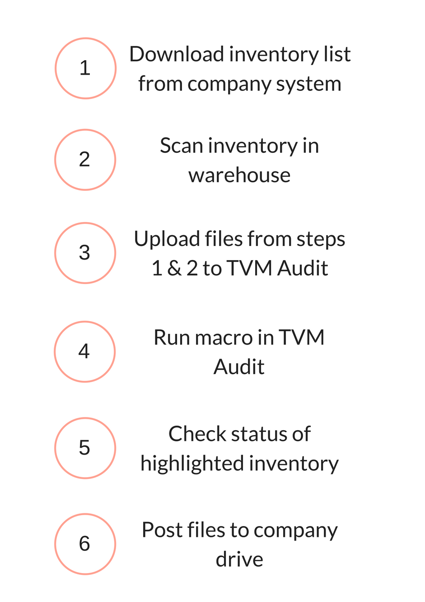

research
Problem: the process for counting inventory varied among most branches and this made it difficult for
operations management to address discrepancies in reported numbers.
My supervisor explained that I was to design a barcode scanning app as part of improving the overall
inventory process. To begin this project, I recruited seven managers to be in my pilot group: two were
in California and the rest were in Illinois, Georgia, Texas, Louisiana, and Virginia. I selected these
branches because they all varied in size and provided diversity to my group. I was given a day to
interview the group and gather information about their inventory practices.
I asked questions on the themes of organization, process, and tools. Some of these questions were:
"Describe your method of organization in the warehouse."
"Could you please describe the steps that you take to do inventory?"
"Could you please tell me what you use to perform inventory counts?"
"Tell me about a time that you were frustrated while doing inventory counts."
Here is some of what I learned:
- Larger branches had come up with 'shortcuts' to speed up inventory counts
- One of the managers had created a macro-enabled spreadsheet that identifies missing inventory
- All branches had inventory organized based on item type
- Smaller branches took about 20-30 mins to do inventory; larger branches took 45min-1hr+
- Branches once used an inventory tracking software but abandoned it because it became outdated
After the call, I spent another day organizing my data to present to my supervisor.
Idea: the inventory app will accommodate all branches regardless of size by cutting down
the time it takes branches to count their stock.
My supervisor decided that we had enough information to continue this project and develop the app.
As an addition, she decided to include the manager's macro-enabled Excel file (audit) as another tool
to be used in the revamped process. The audit cross-checked two files: an Excel download
from the company's system which included all inventory owned by a branch and an Excel file produced by
the app containing the scanned items present in the warehouse. Highlighted items in the audit indicated
potentially missing inventory.
The revamped count process is shown below:

My next step was to deliver some flow diagrams.